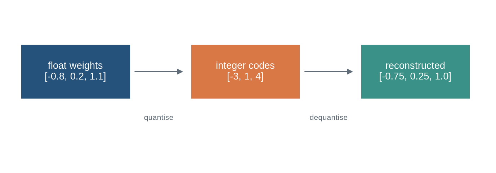
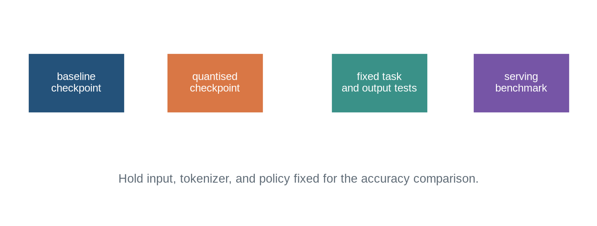

Lower-precision representations, memory budgets, and accuracy checks
Chapter orientation
Why this chapter matters
Inference requires model weights, temporary computation, and often a key-value cache to fit in available hardware memory. Quantisation represents selected tensors with fewer bits than a higher-precision baseline. It can reduce storage, memory traffic, and sometimes latency, but it introduces approximation error and depends on hardware kernels, tensor formats, calibration choices, and serving configuration.
Quantisation is not a single setting called “4-bit” or “8-bit”. A valid description states which tensors are converted, group sizes and scales, activation and cache formats, compute precision, conversion method, and the evaluation used to detect degradation. This chapter develops that account before Chapter 33 turns to retrieval-augmented generation.
Learning objectives
By the end of this chapter, you should be able to:
distinguish storage precision, compute precision, and quantised tensor values;
calculate approximate weight-memory savings from bit width;
implement a toy affine quantiser and reconstruction error check;
explain per-tensor, per-channel, and groupwise scaling;
identify weights, activations, and key-value cache as separate quantisation targets;
state why hardware and kernels affect measured speed; and
specify a conversion and evaluation record for an efficient inference deployment.
Running vector
The running vector is represented in floating point, mapped to a small integer range, and reconstructed using a scale. The reconstructed values are close to, but not equal to, the original values.
Code
import numpy as npimport matplotlib.pyplot as pltfrom matplotlib.patches import Rectangle, FancyArrowPatchplt.style.use("seaborn-v0_8-whitegrid")blue,teal,orange,purple,grey="#24527a","#3a9188","#d97745","#7655a6","#5f6b76"fig,ax=plt.subplots(figsize=(9,3)); ax.axis("off")for x,label,c in [(.25,"float weights\n[-0.8, 0.2, 1.1]",blue),(3.35,"integer codes\n[-3, 1, 4]",orange),(6.45,"reconstructed\n[-0.75, 0.25, 1.0]",teal)]: ax.add_patch(Rectangle((x,1.2),2.0,.65,facecolor=c,edgecolor="white")); ax.text(x+1,1.525,label,ha="center",va="center",color="white")for x,label in [(2.3,"quantise"),(5.4,"dequantise")]: ax.add_patch(FancyArrowPatch((x,1.525),(x+.95,1.525),arrowstyle="-|>",color=grey,mutation_scale=12)); ax.text(x+.47,.95,label,ha="center",color=grey,fontsize=8)ax.set_xlim(0,8.8); ax.set_ylim(.4,2.3); plt.show()

Figure 33.1: Quantisation maps floating-point values to a finite integer code range and reconstructs approximate values using stored scale information.
Quantisation. A representation of values using fewer or different numerical levels to reduce memory or computation. Its effect must be assessed on the stored values, the execution path, and the task outcome.
Level 1 - Intuition
Fewer bits trade representation detail for resource use
A floating-point tensor stores values with a wide numerical range and finite precision. A quantised tensor stores codes from a smaller set, plus scales and sometimes zero points that map codes back to approximate values. Fewer bits reduce the raw weight footprint. They can also reduce data movement, which is frequently a practical bottleneck in generation. The conversion discards detail, so task behaviour must be checked after conversion.
For a model with (P) weights, a simple storage estimate is (Pb/8) bytes for (b)-bit values, before scales, metadata, packing overhead, and non-quantised tensors. This calculation is useful for capacity planning but is not a measured memory requirement.
Code
parameters=7_000_000_000for bits in [16,8,4]: print(bits,"bit raw weight GiB:",round(parameters*bits/8/2**30,2))
16 bit raw weight GiB: 13.04
8 bit raw weight GiB: 6.52
4 bit raw weight GiB: 3.26
Figure 33.2: Lower stored bit width reduces raw weight-memory requirements, while scales, metadata, and unquantised tensors add overhead.
Precision names do not specify an inference system
“4-bit model” may mean weights stored in four-bit codes while matrix multiplication accumulates in higher precision. It may leave embeddings, output layers, activations, or the key-value cache at another precision. Two deployments with the same advertised weight bit width can therefore have different memory use, latency, and output behaviour.
Quantisation also does not automatically improve latency. A device and runtime need efficient kernels for the format and batch shape. Dequantisation, memory alignment, small batches, long context caches, and unsupported operations can eliminate an expected speed gain. Measure the target workload rather than inferring throughput from a format label.
Level 2 - Quantisation mechanics
A simple affine quantiser
For symmetric signed quantisation, a scale can map a maximum magnitude to the largest available integer code. Values are divided by the scale, rounded, clipped to the integer range, and reconstructed by multiplying the code by the scale. Real systems add choices about group size, outliers, zero points, packing, and kernel layout.
Figure 33.3: Quantised reconstruction replaces each original value with a nearby representable level; the error depends on scale and code range.
Scales determine where error falls
One scale for a whole tensor is simple but can represent small values poorly when a few outliers determine the range. Per-channel or groupwise scaling uses more scale values and metadata while allowing each channel or group a more suitable range. The group definition must be recorded because it changes the representation and can change accuracy.
Weights, activations, and caches have different roles
Weight quantisation changes static model storage. Activation quantisation changes intermediate computation and may require calibration data or quantisation-aware training. Key-value cache quantisation changes the growing state of autoregressive serving described in Chapter 27. These choices have different numerical and memory consequences and should not be conflated.
Figure 33.4: Inference memory includes static weights, temporary activations, and a length-dependent key-value cache; each component can use a different precision.
The relevant memory budget changes with prompt length, output length, concurrency, batch policy, and cache layout. A conversion that permits a checkpoint to load may still fail under long concurrent requests because the cache becomes dominant. Conversely, reducing cache precision can affect long-context outputs even when the weight-only conversion was accurate on short prompts.
Calibration and validation must follow conversion
Post-training quantisation may use representative activations to choose scales or protect outlier channels. The calibration set should resemble the declared workload in language, length, formatting, and task type. Calibrating only short generic prompts then claiming a result for long code or multilingual documents leaves an untested gap.
Numerical error accumulates through a generation loop
Quantisation does not perturb one isolated matrix multiplication. A generated token changes the next prefix, which changes attention keys, values, and later logits. Small differences can leave a short deterministic output unchanged or lead to a different token after a close decision, after which the two generations follow different prefixes. Output disagreement is therefore expected to be task- and decoding-dependent, not proof by itself that conversion failed.
The useful comparison separates numerical equivalence tests from behaviour tests. On a small fixed reference input, compare intermediate or next-token logits within a stated tolerance. On a task suite, compare outcome scores and error categories. On a serving workload, compare memory and latency at the prompt lengths and concurrency that matter. Each test identifies a different conversion property.
max logit difference: 0.0050000000000001155
same greedy token: True
Quantisation policy should include fallback behaviour
Some deployments keep selected modules in higher precision because they are sensitive to a conversion method or because a runtime lacks a suitable kernel. Others route long-context or high-stakes requests to a higher-precision model. A fallback is not a defect, but it changes cost and comparability. The policy should state when it is triggered and report how often it occurs in the intended workload.
A quantised checkpoint requires a conversion record
The record should state base checkpoint hash, tokenizer, source dtype, weight and activation formats, group size, scales and zero-point method, exempt modules, calibration data and procedure, compute accumulation dtype, cache format, runtime and kernel version, hardware, merge status for adapters, and output artifact hashes. A conversion cannot be audited from a filename such as model-4bit.
Code
conversion={"base_hash":"abc","weight_format":"int4 groupwise","group_size":128,"compute_dtype":"float16","kv_cache":"float16","runtime":"versioned"}assert {"base_hash","weight_format","compute_dtype","runtime"} <=set(conversion)print("conversion record complete")
conversion record complete
Validate both task behaviour and service behaviour
Compare the baseline and converted model under the same tokenizer, prompt template, decoding policy, maximum lengths, and hardware workload where possible. Report target-task scores, retained tasks, output agreement on a fixed reference set, error categories, peak memory, prefill and decode latency, throughput at declared concurrency, and failure behaviour near the context limit. A lower memory number without a matching accuracy and workload record is incomplete evidence.
Code
fig,ax=plt.subplots(figsize=(8.8,3.2)); ax.axis("off")for x,label,c in [(.3,"baseline\ncheckpoint",blue),(2.45,"quantised\ncheckpoint",orange),(5.0,"fixed task\nand output tests",teal),(7.2,"serving\nbenchmark",purple)]: ax.add_patch(Rectangle((x,1.25),1.5,.6,facecolor=c,edgecolor="white")); ax.text(x+.75,1.55,label,ha="center",va="center",color="white",fontsize=9)ax.text(4.5,.55,"Hold input, tokenizer, and policy fixed for the accuracy comparison.",ha="center",color=grey); ax.set_xlim(0,9); ax.set_ylim(.2,2.3); plt.show()

Figure 33.5: Quantisation validation compares a baseline and converted checkpoint on fixed outputs, task scores, memory, latency, and context-boundary behaviour.
Common misconceptions
A 4-bit label fully specifies quantisation. Tensor targets, scales, groups, compute dtype, and runtime remain necessary.
Lower bit width always gives proportional speed gains. Kernel support and workload shape determine observed latency.
Weight quantisation solves all inference memory limits. Activations and KV caches can dominate.
Quantisation error is only a scalar reconstruction error. Task and sequence behaviour can change unevenly.
A model that loads successfully is validated. It needs accuracy, boundary, and service tests.
Exercises
Calculate raw storage for a parameter count at 16, 8, and 4 bits.
Implement a symmetric affine quantiser for a supplied vector.
Calculate reconstruction error and identify an outlier effect.
Compare global and per-channel scales.
List weight, activation, and cache precision separately for a deployment.
Explain why a KV cache can dominate long-context memory.
Design a representative calibration set for a declared application.
Specify a fixed-output comparison between baseline and quantised models.
List fields needed in a conversion record.
Explain why hardware kernels affect a latency claim.
Compare storage precision and accumulation precision.
Design a context-boundary test after cache quantisation.
Identify an adapter merge field needed before quantisation.
State why a generic short-prompt evaluation is insufficient.
Propose a serving benchmark with stated concurrency.
Identify the next chapter’s retrieval pipeline topic.
Summary
Quantisation represents selected model tensors with lower-precision codes and associated scaling information. It can reduce weight storage and memory traffic, but its accuracy and latency effects depend on tensor scope, scaling method, activation and cache formats, runtime kernels, workload, and hardware. Conversion must be evaluated as a changed inference system.
Chapter 33 examines a different route to improving responses: retrieving external evidence and constructing the model context from it.
Looking ahead
Quantisation changes the representation and execution of a fixed model. Chapter 33 examines a different route to extending a system: constructing model context from an external, versioned collection.
Further reading
QLoRA combines low-rank adaptation with a quantised base model (Dettmers et al. 2023). GPTQ provides one post-training quantisation approach for generative models (Frantar et al. 2023).
Dettmers, Tim, Artidoro Pagnoni, Ari Holtzman, and Luke Zettlemoyer. 2023. “QLoRA: Efficient Finetuning of Quantized LLMs.”Advances in Neural Information Processing Systems 36: 10088–115. https://arxiv.org/abs/2305.14314.
Frantar, Elias, Saleh Ashkboos, Torsten Hoefler, and Dan Alistarh. 2023. “GPTQ: Accurate Post-Training Quantization for Generative Pre-Trained Transformers.”International Conference on Learning Representations. https://arxiv.org/abs/2210.17323.
Source Code
---title: "Quantisation and Efficient Inference"subtitle: "Lower-precision representations, memory budgets, and accuracy checks"---## Chapter orientation### Why this chapter mattersInference requires model weights, temporary computation, and often a key-value cache to fit in available hardware memory. Quantisation represents selected tensors with fewer bits than a higher-precision baseline. It can reduce storage, memory traffic, and sometimes latency, but it introduces approximation error and depends on hardware kernels, tensor formats, calibration choices, and serving configuration.Quantisation is not a single setting called “4-bit” or “8-bit”. A valid description states which tensors are converted, group sizes and scales, activation and cache formats, compute precision, conversion method, and the evaluation used to detect degradation. This chapter develops that account before Chapter 33 turns to retrieval-augmented generation.### Learning objectivesBy the end of this chapter, you should be able to:- distinguish storage precision, compute precision, and quantised tensor values;- calculate approximate weight-memory savings from bit width;- implement a toy affine quantiser and reconstruction error check;- explain per-tensor, per-channel, and groupwise scaling;- identify weights, activations, and key-value cache as separate quantisation targets;- state why hardware and kernels affect measured speed; and- specify a conversion and evaluation record for an efficient inference deployment.### Running vectorThe running vector is represented in floating point, mapped to a small integer range, and reconstructed using a scale. The reconstructed values are close to, but not equal to, the original values.```{python}#| label: fig-quantisation-map#| fig-cap: "Quantisation maps floating-point values to a finite integer code range and reconstructs approximate values using stored scale information."#| fig-alt: "A diagram shows floating values mapped to integer codes then reconstructed into nearby floating values."import numpy as npimport matplotlib.pyplot as pltfrom matplotlib.patches import Rectangle, FancyArrowPatchplt.style.use("seaborn-v0_8-whitegrid")blue,teal,orange,purple,grey="#24527a","#3a9188","#d97745","#7655a6","#5f6b76"fig,ax=plt.subplots(figsize=(9,3)); ax.axis("off")for x,label,c in [(.25,"float weights\n[-0.8, 0.2, 1.1]",blue),(3.35,"integer codes\n[-3, 1, 4]",orange),(6.45,"reconstructed\n[-0.75, 0.25, 1.0]",teal)]: ax.add_patch(Rectangle((x,1.2),2.0,.65,facecolor=c,edgecolor="white")); ax.text(x+1,1.525,label,ha="center",va="center",color="white")for x,label in [(2.3,"quantise"),(5.4,"dequantise")]: ax.add_patch(FancyArrowPatch((x,1.525),(x+.95,1.525),arrowstyle="-|>",color=grey,mutation_scale=12)); ax.text(x+.47,.95,label,ha="center",color=grey,fontsize=8)ax.set_xlim(0,8.8); ax.set_ylim(.4,2.3); plt.show()```::: {.concept-box .concept-core #concept-quantisation data-term="Quantisation" data-domain="Large language models"}**Quantisation.** A representation of values using fewer or different numerical levels to reduce memory or computation. Its effect must be assessed on the stored values, the execution path, and the task outcome.:::## Level 1 - Intuition### Fewer bits trade representation detail for resource useA floating-point tensor stores values with a wide numerical range and finite precision. A quantised tensor stores codes from a smaller set, plus scales and sometimes zero points that map codes back to approximate values. Fewer bits reduce the raw weight footprint. They can also reduce data movement, which is frequently a practical bottleneck in generation. The conversion discards detail, so task behaviour must be checked after conversion.For a model with \(P\) weights, a simple storage estimate is \(P\times b/8\) bytes for \(b\)-bit values, before scales, metadata, packing overhead, and non-quantised tensors. This calculation is useful for capacity planning but is not a measured memory requirement.```{python}parameters=7_000_000_000for bits in [16,8,4]: print(bits,"bit raw weight GiB:",round(parameters*bits/8/2**30,2))``````{python}#| label: fig-weight-memory#| fig-cap: "Lower stored bit width reduces raw weight-memory requirements, while scales, metadata, and unquantised tensors add overhead."#| fig-alt: "A bar chart compares illustrative raw storage of a seven-billion-parameter model at 16, 8, and 4 bits."bits=np.array([16,8,4]); gib=parameters*bits/8/2**30fig,ax=plt.subplots(figsize=(7,4)); ax.bar(["16-bit","8-bit","4-bit"],gib,color=[blue,teal,orange]); ax.set_ylabel("raw weight storage (GiB)"); ax.set_title("Raw storage estimate before quantisation overhead"); plt.tight_layout(); plt.show()```### Precision names do not specify an inference system“4-bit model” may mean weights stored in four-bit codes while matrix multiplication accumulates in higher precision. It may leave embeddings, output layers, activations, or the key-value cache at another precision. Two deployments with the same advertised weight bit width can therefore have different memory use, latency, and output behaviour.Quantisation also does not automatically improve latency. A device and runtime need efficient kernels for the format and batch shape. Dequantisation, memory alignment, small batches, long context caches, and unsupported operations can eliminate an expected speed gain. Measure the target workload rather than inferring throughput from a format label.## Level 2 - Quantisation mechanics### A simple affine quantiserFor symmetric signed quantisation, a scale can map a maximum magnitude to the largest available integer code. Values are divided by the scale, rounded, clipped to the integer range, and reconstructed by multiplying the code by the scale. Real systems add choices about group size, outliers, zero points, packing, and kernel layout.```{python}x=np.array([-.83,-.31,.18,.62,1.04])qmax=7scale=np.max(np.abs(x))/qmaxcodes=np.clip(np.round(x/scale),-qmax,qmax).astype(int)reconstructed=codes*scaleprint("scale:",round(scale,3),"codes:",codes)print("reconstructed:",np.round(reconstructed,3))print("max absolute error:",round(np.max(np.abs(x-reconstructed)),3))``````{python}#| label: fig-reconstruction-error#| fig-cap: "Quantised reconstruction replaces each original value with a nearby representable level; the error depends on scale and code range."#| fig-alt: "A scatter plot compares original vector values with reconstructed values, alongside a diagonal equality line."fig,ax=plt.subplots(figsize=(5.5,4.5)); ax.scatter(x,reconstructed,color=teal,s=65); ax.plot([-1.1,1.1],[-1.1,1.1],color=grey,ls="--"); ax.set_xlabel("original"); ax.set_ylabel("reconstructed"); ax.set_title("Toy quantisation reconstruction"); plt.tight_layout(); plt.show()```### Scales determine where error fallsOne scale for a whole tensor is simple but can represent small values poorly when a few outliers determine the range. Per-channel or groupwise scaling uses more scale values and metadata while allowing each channel or group a more suitable range. The group definition must be recorded because it changes the representation and can change accuracy.```{python}weights=np.array([[.02,.04,.08,1.1],[.01,.03,.06,.09]])global_scale=np.max(np.abs(weights))/7row_scales=np.max(np.abs(weights),axis=1)/7print("global scale:",round(global_scale,3),"row scales:",np.round(row_scales,3))```## Level 3 - System-level effects### Weights, activations, and caches have different rolesWeight quantisation changes static model storage. Activation quantisation changes intermediate computation and may require calibration data or quantisation-aware training. Key-value cache quantisation changes the growing state of autoregressive serving described in Chapter 27. These choices have different numerical and memory consequences and should not be conflated.```{python}#| label: fig-memory-components#| fig-cap: "Inference memory includes static weights, temporary activations, and a length-dependent key-value cache; each component can use a different precision."#| fig-alt: "A stacked bar separates weights, temporary activations, and KV cache, with annotations for independent precision choices."fig,ax=plt.subplots(figsize=(8,4)); components=np.array([10,2,5]); ax.bar(["inference request"],components[0],color=blue,label="weights"); ax.bar(["inference request"],components[1],bottom=components[0],color=orange,label="temporary activations"); ax.bar(["inference request"],components[2],bottom=components[:2].sum(),color=teal,label="KV cache"); ax.legend(); ax.set_ylabel("relative memory"); ax.set_title("Quantisation targets have distinct memory roles"); plt.tight_layout(); plt.show()```The relevant memory budget changes with prompt length, output length, concurrency, batch policy, and cache layout. A conversion that permits a checkpoint to load may still fail under long concurrent requests because the cache becomes dominant. Conversely, reducing cache precision can affect long-context outputs even when the weight-only conversion was accurate on short prompts.### Calibration and validation must follow conversionPost-training quantisation may use representative activations to choose scales or protect outlier channels. The calibration set should resemble the declared workload in language, length, formatting, and task type. Calibrating only short generic prompts then claiming a result for long code or multilingual documents leaves an untested gap.```{python}baseline=np.array([.62,.58,.71])quantised=np.array([.61,.57,.68])print("task deltas:",np.round(quantised-baseline,3))```### Numerical error accumulates through a generation loopQuantisation does not perturb one isolated matrix multiplication. A generated token changes the next prefix, which changes attention keys, values, and later logits. Small differences can leave a short deterministic output unchanged or lead to a different token after a close decision, after which the two generations follow different prefixes. Output disagreement is therefore expected to be task- and decoding-dependent, not proof by itself that conversion failed.The useful comparison separates numerical equivalence tests from behaviour tests. On a small fixed reference input, compare intermediate or next-token logits within a stated tolerance. On a task suite, compare outcome scores and error categories. On a serving workload, compare memory and latency at the prompt lengths and concurrency that matter. Each test identifies a different conversion property.```{python}baseline_logits=np.array([2.001,1.200,.302])quantised_logits=np.array([1.996,1.205,.297])print("max logit difference:",np.max(np.abs(baseline_logits-quantised_logits)))print("same greedy token:",baseline_logits.argmax()==quantised_logits.argmax())```### Quantisation policy should include fallback behaviourSome deployments keep selected modules in higher precision because they are sensitive to a conversion method or because a runtime lacks a suitable kernel. Others route long-context or high-stakes requests to a higher-precision model. A fallback is not a defect, but it changes cost and comparability. The policy should state when it is triggered and report how often it occurs in the intended workload.```{python}request={"prompt_tokens":12000,"task":"source-grounded answer"}route="higher precision"if request["prompt_tokens"]>8192else"quantised"print("route:",route)```## Level 4 - Audit and deployment### A quantised checkpoint requires a conversion recordThe record should state base checkpoint hash, tokenizer, source dtype, weight and activation formats, group size, scales and zero-point method, exempt modules, calibration data and procedure, compute accumulation dtype, cache format, runtime and kernel version, hardware, merge status for adapters, and output artifact hashes. A conversion cannot be audited from a filename such as `model-4bit`.```{python}conversion={"base_hash":"abc","weight_format":"int4 groupwise","group_size":128,"compute_dtype":"float16","kv_cache":"float16","runtime":"versioned"}assert {"base_hash","weight_format","compute_dtype","runtime"} <=set(conversion)print("conversion record complete")```### Validate both task behaviour and service behaviourCompare the baseline and converted model under the same tokenizer, prompt template, decoding policy, maximum lengths, and hardware workload where possible. Report target-task scores, retained tasks, output agreement on a fixed reference set, error categories, peak memory, prefill and decode latency, throughput at declared concurrency, and failure behaviour near the context limit. A lower memory number without a matching accuracy and workload record is incomplete evidence.```{python}#| label: fig-conversion-audit#| fig-cap: "Quantisation validation compares a baseline and converted checkpoint on fixed outputs, task scores, memory, latency, and context-boundary behaviour."#| fig-alt: "A diagram connects baseline and quantised models to shared task evaluation and shared serving benchmarks."fig,ax=plt.subplots(figsize=(8.8,3.2)); ax.axis("off")for x,label,c in [(.3,"baseline\ncheckpoint",blue),(2.45,"quantised\ncheckpoint",orange),(5.0,"fixed task\nand output tests",teal),(7.2,"serving\nbenchmark",purple)]: ax.add_patch(Rectangle((x,1.25),1.5,.6,facecolor=c,edgecolor="white")); ax.text(x+.75,1.55,label,ha="center",va="center",color="white",fontsize=9)ax.text(4.5,.55,"Hold input, tokenizer, and policy fixed for the accuracy comparison.",ha="center",color=grey); ax.set_xlim(0,9); ax.set_ylim(.2,2.3); plt.show()```## Common misconceptions- **A 4-bit label fully specifies quantisation.** Tensor targets, scales, groups, compute dtype, and runtime remain necessary.- **Lower bit width always gives proportional speed gains.** Kernel support and workload shape determine observed latency.- **Weight quantisation solves all inference memory limits.** Activations and KV caches can dominate.- **Quantisation error is only a scalar reconstruction error.** Task and sequence behaviour can change unevenly.- **A model that loads successfully is validated.** It needs accuracy, boundary, and service tests.## Exercises1. Calculate raw storage for a parameter count at 16, 8, and 4 bits.2. Implement a symmetric affine quantiser for a supplied vector.3. Calculate reconstruction error and identify an outlier effect.4. Compare global and per-channel scales.5. List weight, activation, and cache precision separately for a deployment.6. Explain why a KV cache can dominate long-context memory.7. Design a representative calibration set for a declared application.8. Specify a fixed-output comparison between baseline and quantised models.9. List fields needed in a conversion record.10. Explain why hardware kernels affect a latency claim.11. Compare storage precision and accumulation precision.12. Design a context-boundary test after cache quantisation.13. Identify an adapter merge field needed before quantisation.14. State why a generic short-prompt evaluation is insufficient.15. Propose a serving benchmark with stated concurrency.16. Identify the next chapter's retrieval pipeline topic.## SummaryQuantisation represents selected model tensors with lower-precision codes and associated scaling information. It can reduce weight storage and memory traffic, but its accuracy and latency effects depend on tensor scope, scaling method, activation and cache formats, runtime kernels, workload, and hardware. Conversion must be evaluated as a changed inference system.[Chapter 33](33-retrieval-augmented-generation.qmd) examines a different route to improving responses: retrieving external evidence and constructing the model context from it.## Looking aheadQuantisation changes the representation and execution of a fixed model. [Chapter 33](33-retrieval-augmented-generation.qmd) examines a different route to extending a system: constructing model context from an external, versioned collection.## Further readingQLoRA combines low-rank adaptation with a quantised base model [@dettmers2023qlora]. GPTQ provides one post-training quantisation approach for generative models [@frantar2022gptq].